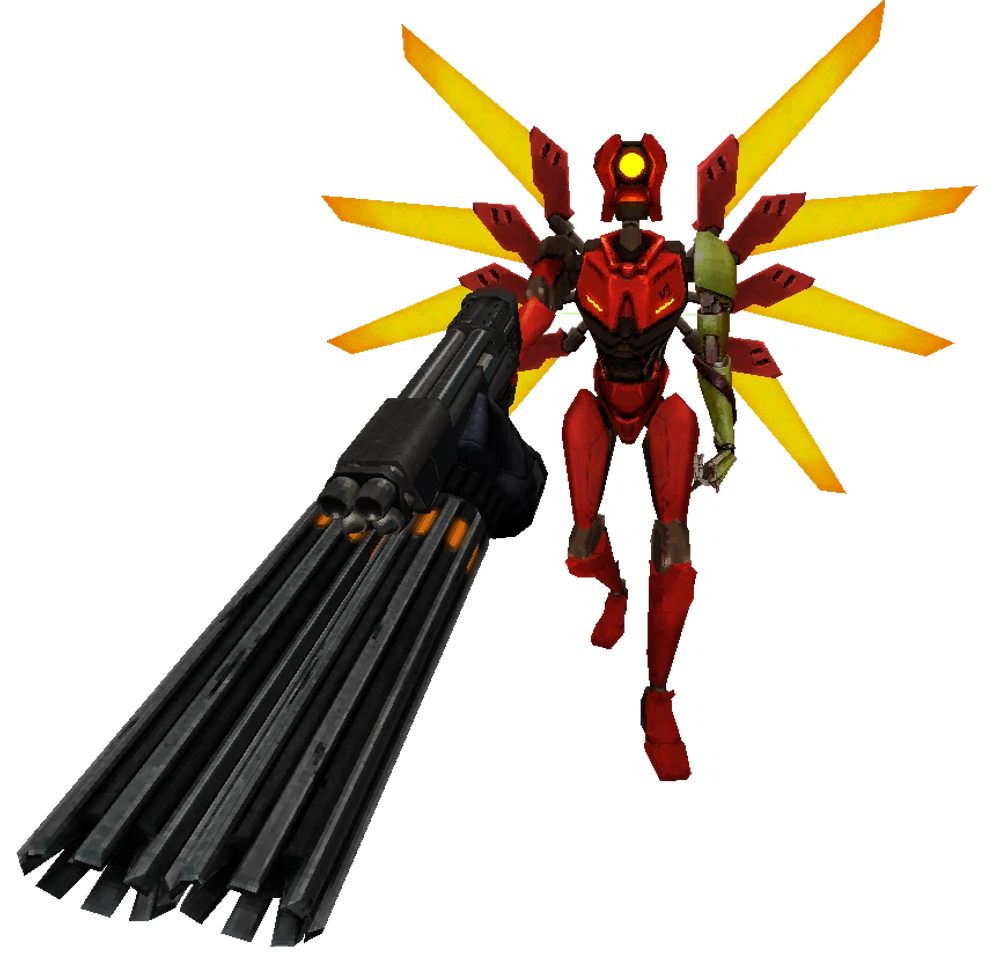

V2 returns in this second encounter, now armed with more powerful weapons and a renewed desire for revenge after its first defeat. No longer using the blood-absorptive plating from V1, V2 comes equipped with standard armor plating, but it’s learned from its past battle with V1. This time, it’s faster, more unpredictable, and carries new tools—such as a Marksman Revolver, Overheat Nailgun, and the ability to target V1’s coins. This battle takes place in [4-4: CLAIR DE SOLEIL], where V2 will not only try to defeat V1, but will also try to shoot at your coins during the fight.
After defeating V2, it will escape through a wall, leading to a thrilling chase and a final showdown between the two bots as they slide down the side of a pyramid, ending with V2’s splattering and the Whiplash left behind.

Combat Overview
V2 is now an even more agile adversary, capable of dashing, wall-jumping, and sliding like V1. It comes with new abilities and attacks learned from its first fight. With the addition of the Marksman Revolver and Overheat Nailgun, along with its newfound ability to target and shoot coins, V2 has become a significantly harder opponent. Its unpredictable movement patterns and enhanced combat skills make it a dangerous challenge.
Movement Patterns
V2’s movement patterns change depending on the color of its wings. Each pattern influences how it behaves in battle:
Yellow Wings: V2 will randomly pick a direction to run, and when it collides with something, it will choose a new direction.
Blue Wings: V2 circles around the player, strafing and getting closer slowly.
Red Wings: V2 aggressively rushes the player, closing distance quickly with slides. Once it reaches a certain proximity, it will circle-strafe at close range until the player retreats or the movement pattern changes. This is the only pattern used when V2 is enraged.
Green Wings: V2 will quickly gain distance, reducing its attack speed. This triggers if the player stays too close for too long but doesn’t activate if the player has less than 33 health.
Attacks
Revolver Combo: V2 fires a three-shot combo with its Marksman Revolver, preceded by a "pling" sound and a yellow flash. Only one shot can be parried with precise timing.
Charged Piercer Beam: V2 charges up a blue-light beam similar to V1's Piercer Revolver. The beam can be parried.
Shotgun Shot: V2 fires a single shot from its shotgun, accompanied by a "sizzling" sound and an orange flash. The shotgun pellets can be parried.
Core Eject Attack: V2 ejects its core from the shotgun, causing a red explosion if shot with a hitscan weapon.
Coin Toss: V2 flips coins into the air, with a revolver shot chaining off the last coin. The shot lingers on the last coin, glowing red before launching at V1. These coins can also be shot by V1 for a counter-ricoshot.
Nailgun Volley: V2 fires a volley of nails from its Overheat Nailgun. A blue flash marks this attack, which can be avoided by quick movement.
Nailgun Burst: V2 fires a more powerful burst from the Nailgun, which charges up before firing. The charging sound warns players of the attack.
Rage
V2 will become enraged after enough time spent in proximity to the player, indicated by the rising gauge beneath its health bar. Upon reaching full rage, V2 will enter an enraged state, where it becomes faster, more aggressive, and can continuously fire Piercer charge shots. V2 will cancel slides earlier to chase the player with more precision, and it will not throw coins or shoot V1's coins while enraged. Its rage will eventually wear off if it remains in its preferred range for a long enough period.
Difficulty Changes
HARMLESS: V2’s Revolver combo will only fire one shot. V2 throws only one coin, and it is slower to react.
LENIENT: V2’s Revolver combo will fire two shots. V2 spends less time airborne.
VIOLENT: V2’s movement becomes more unpredictable and harder to track. It can now dash.
BRUTAL: V2’s health is increased from 40 to 60. Its movement is faster, and it can dash more frequently, making it harder to predict.
Speed Debuffs
V2’s ground movement is 10% slower if the player has 33 health or less on Violent difficulty or lower.
Ground movement is 10% slower if the player is within 10 units of V2 on Standard difficulty or lower (this debuff stacks with the previous one).
V2’s jumps become shorter if the player is within 10 units on Standard difficulty or lower, with an additional jump height debuff if the player has 33 health or less.
V2 cannot slide at close range and will cancel its slide sooner if the player has 50 health or less on Standard difficulty or lower.
V2’s movement speed is reduced when it is stuck with a Screwdriver drill.
Rending Apart
V2’s unpredictable movement and variety of attacks can be difficult to manage, but using magnets and projectiles like the Sawblade Launcher can turn the tide. Magnets will prevent V2 from using its Nailgun until they expire, and setting up traps with the Sawblade Launcher can help you control its movement. Counter-ricoshots against the coins are also an effective tactic to deal massive damage. If you have access to powerful projectile weapons like the Railcannon or Rocket Launcher, these can make quick work of V2 while it's airborne.
When returning to the fight with a full loadout, use the Rocket Launcher to quickly deal damage, especially when V2 is airborne.